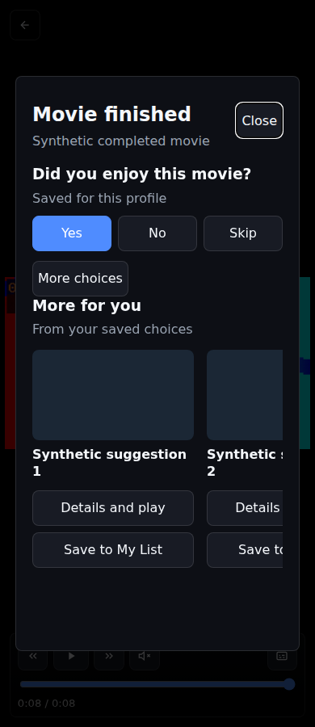
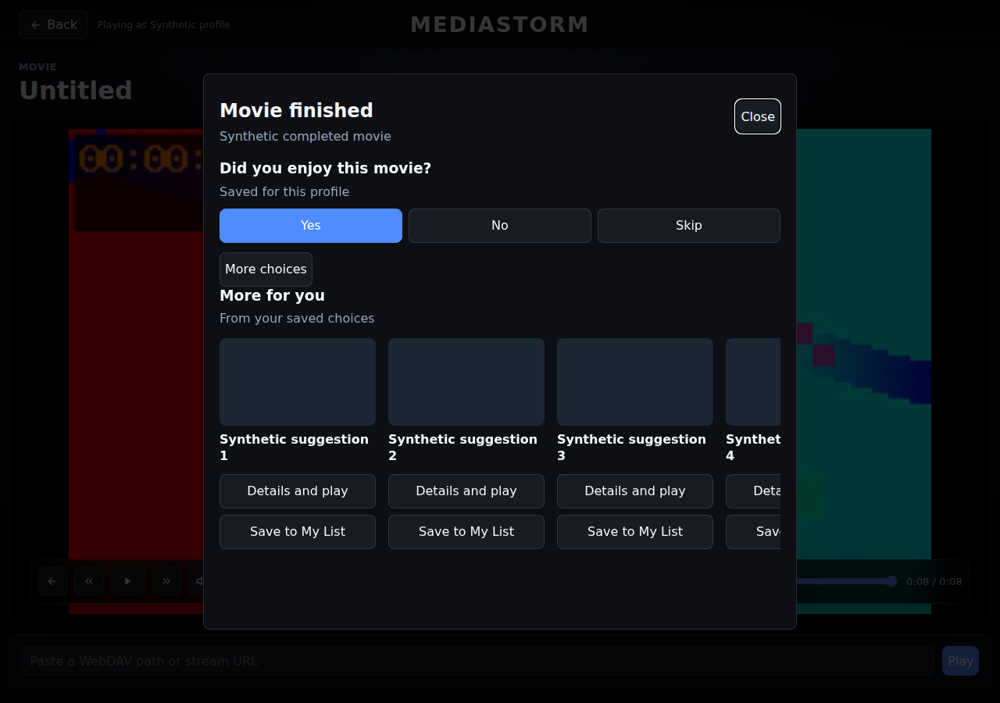

Mediastorm · isolated synthetic validation
Finished watching. Your choice comes next.
An optional personal rating and profile suggestions after genuine completion. Skip writes nothing. Ordinary episodes keep their existing next-episode controls; a final known episode clearly offers a rating for the whole series.
8,204 Go cases and 805 native tests passed. Both APKs built with empty private debug defaults. Real Chromium API checks use a separate loopback demo application and its synthetic PostgreSQL database.
- The production web template plays generated video, reaches its natural end and offers Yes, No or Skip. Existing ratings are shown and remain editable.
- Failed writes remain unconfirmed and can be retried. Late suggestion responses cannot overwrite a newer vote.
- Suggestions use current profile policy and exclude the completed title, seen, hidden and disliked choices. When external metadata is unavailable, owned cached or saved choices remain available.
- Native cards offer Details, Play and My List. Web cards use the verified Watch details route, where playback remains an explicit action. No source is prepared just to show a card.
- Close retains focus while suggestions arrive. The web dialog fits 320, 375, 390, 414, 768 and 1280 pixel widths.
These images show the real web template with generated media and synthetic API responses. A separate Chromium suite checks actual application APIs. The credential-free demo has no external detail metadata; handler tests cover trusted details delivery. Native Compose screens compiled and their controller state was tested. Physical device focus, rendering, audio and accessibility acceptance remain pending.

Actual web template, generated video, optional rating.
Desktop. Open full screenshot.Complete backend results · Race checks · Native tests and APK hashes · Rendered player checks · Real application API checks · Full application playback